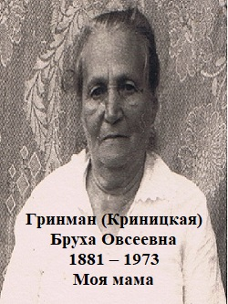

Израиль
Петах-Тиква
20 июля 1994 года
Посвящается моим дорогим сыновьям – Виле, Киму и Фиме.
Мои дорогие и любимые дети, я хочу кратко описать пройденный мною путь моей жизни. Она была не легкой, но яркой. Она протекала в период становления новой жизни, борьбы за счастье всех людей, в период, обеспечивающий моим детям право учиться и выйти на самостоятельный путь жизни.
 Когда я родился, не помню, но из рассказов моей любимой мамы я знаю, что это было в середине июня 1905 года на чердаке дома во время еврейского погрома.
Мы жили в собственной хате у дедушки моего отца. Хата стояла у берега реки Каменки внизу Чудновской улицы, недалеко от Чудновского моста, где Каменка впадает в реку Тетерев. Хата состояла из двух половинок. В одной половинке, которая состояла из двух комнат жил дедушка с бабушкой в одной комнате, а в другой маленькой комнате жил папа с мамой с нами детьми. В другой половине хаты жила сестра мамы, тетя Муня с мужем и дочерями Геней и Раей, там тоже были две комнаты. У нас в доме был стол, два стула небольшой шкаф и в каждой комнате деревянная кровать.